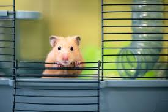

STEPS TO ADOPT

Find your match
Browse available pets
and choose the one
that feels right for you
Apply to Adopt
Fill out a quick adoption
application online.

Meet & Connect
Visit or virtually meet the pet
to make sure it’s a good fit

Bring Them Home
Finalise the adoption
and start your new life together!
HOW IT WORKS
FREQUENTLY ASKED QUESTIONS
You browse available pets, fill out an application, and once approved,
you're connected with the shelter or foster for next steps like a
meet-and-greet or home check.
Yes, the fee helps cover vaccinations, microchipping,
spaying/neutering, and basic care. It varies by organization.
On average, the process takes between 3–10 days, depending on how
quickly references are checked and meet-and-greets can be scheduled.
Some shelters allow out-of-area adoptions, but others may not.
Most shelters offer a trial period or return policy. Always check with
the specific organization beforehand.
Yes, in most cases. Each pet’s profile will include details about
medical history, vaccinations, and whether they are already
spayed/neutered.
Absolutely! Just make sure to filter for pets that are marked as
“kid-friendly.” We also recommend scheduling a meet-and-greet to see
how they interact.
Not necessarily. Some pets (like larger or more active breeds) may
need outdoor space, but many do well in apartments with regular walks
and playtime.
PET CARE 101
Fresh Water: Always keep a bowl of clean water available.
Nutritious Food: Feed according to pet age, size, and species. Use vet-recommended brands.
Exercise: Daily walks (for dogs) or playtime (for cats and others) keeps your pet healthy and happy.
Affection & Attention: Regular cuddles, talking, and interaction build trust.
Nutritious Food: Feed according to pet age, size, and species. Use vet-recommended brands.
Exercise: Daily walks (for dogs) or playtime (for cats and others) keeps your pet healthy and happy.
Affection & Attention: Regular cuddles, talking, and interaction build trust.
Vet Visits: Schedule a vet visit within a week of adoption.
Annual checkups after that.
Vaccinations: Keep your pet’s shots up to date. Ask your vet for a schedule.
Flea & Tick Prevention: Use recommended treatments monthly.
Spay/Neuter: Helps prevent overpopulation and can improve behavior and health.
Vaccinations: Keep your pet’s shots up to date. Ask your vet for a schedule.
Flea & Tick Prevention: Use recommended treatments monthly.
Spay/Neuter: Helps prevent overpopulation and can improve behavior and health.
Sleeping Spot: Give them a cozy, quiet area of their own.
Pet-Proofing: Remove toxic plants, secure loose wires, and keep harmful items out of reach.
Toys & Enrichment: Chew toys, scratchers, puzzles — keep boredom at bay!
Pet-Proofing: Remove toxic plants, secure loose wires, and keep harmful items out of reach.
Toys & Enrichment: Chew toys, scratchers, puzzles — keep boredom at bay!
Bathing: Dogs usually need a bath every few weeks; cats often
groom themselves.
Brushing: Helps prevent shedding and mats (especially for long-haired pets).
Nails: Trim monthly or as needed.
Dental Care: Brush teeth if possible; dental chews help too.
Brushing: Helps prevent shedding and mats (especially for long-haired pets).
Nails: Trim monthly or as needed.
Dental Care: Brush teeth if possible; dental chews help too.
Basic Commands: Sit, stay, come — these are great for bonding
and safety.
Positive Reinforcement: Always reward, never punish.
Social Exposure: Introduce slowly to other pets and people.
Positive Reinforcement: Always reward, never punish.
Social Exposure: Introduce slowly to other pets and people.
Patience: It takes time for a pet to adjust. Let them move at
their own pace.
Consistency: Routine builds trust and reduces stress.
Love: You’re their world now — show them love and they'll give it back tenfold.
Consistency: Routine builds trust and reduces stress.
Love: You’re their world now — show them love and they'll give it back tenfold.